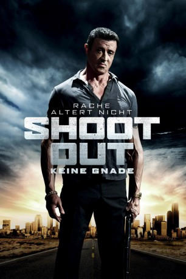

#1754 Shootout - Keine Gnade
Alternativ: Bullet to the Head
 
 IMDB-Wertung: 5.7 / 10
IMDB-Wertung: 5.7 / 10  Metascore: 48
Metascore: 48 
Die Prinzipien des knallharten Auftragskiller James Bonomo aka „Jimmy Bobo“ aus New Orleans sind klar formuliert: Sei erbarmungslos gegenüber deinen Feinden und töte niemals einen Unschuldigen während eines Auftrags. Doch als sein junger Partner genau deswegen mit dem Leben bezahlen muss, gerät Jimmy schnell ins Visier des ehrgeizigen Detectives Taylor Kwon, der gerade wegen der Ermittlung eines schon älteren, ungelösten Falles aus der Hauptstadt in New Orleans eintrifft. Kwons Kollege wurde ebenfalls ermordet und alles deutet auf Jimmy Bobo als Täter hin. Um seinen Partner zu rächen und seine Unschuld zu beweisen, schließt sich Hitman Jimmy schließlich jedoch mit Detective Kwon zusammen: Gemeinsam suchen sie nach Hinweisen, die zu den wahren Tätern führen und geraten dabei in ein Netz aus Intrigen, deren Dimensionen bis in die obersten Etagen des staatlichen Machtapparates in Washington D.C. reichen.
Jahr: 2012
Dauer: 92 Minuten
FSK: 16
Land: USA Studio: Warner Bros.Tonspuren: DTS - ,
Untertitel:
Auflösung: 1080p (1920x1040) Größe: 6103 MB
Genre: Action, Thriller, Krimi
Regisseur:  Walter Hill
Walter Hill
Drehbuch: Alessandro Camon, Alexis Nolent, Colin Wilson
Soundtrack: Steve Mazzaro
Darsteller:
 Sylvester Stallone als James Bonomo
Sylvester Stallone als James Bonomo Sung Kang als Taylor Kwon
Sung Kang als Taylor Kwon Sarah Shahi als Lisa
Sarah Shahi als Lisa Adewale Akinnuoye-Agbaje als Robert Nkomo Morel
Adewale Akinnuoye-Agbaje als Robert Nkomo Morel Jason Momoa als Keegan
Jason Momoa als Keegan Christian Slater als Marcus Baptiste
Christian Slater als Marcus Baptiste Jon Seda als Louis Blanchard
Jon Seda als Louis Blanchard Holt McCallany als Hank Greely
Holt McCallany als Hank Greely Brian Van Holt als Ronnie Earl
Brian Van Holt als Ronnie Earl Weronika Rosati als Lola
Weronika Rosati als Lola Dane Rhodes als LT. Lebreton
Dane Rhodes als LT. Lebreton Marcus Lyle Brown als Detective Towne
Marcus Lyle Brown als Detective Towne Dana Gourrier als Deputy Coroner
Dana Gourrier als Deputy Coroner Robert Larriviere als Forensic Scientist
Robert Larriviere als Forensic Scientist Don Yesso als St. Charles Bartender
Don Yesso als St. Charles Bartender Douglas M. Griffin als Baby Jack Lemoyne
Douglas M. Griffin als Baby Jack Lemoyne Jackson Beals als French Lick Bartender
Jackson Beals als French Lick Bartender Donna Duplantier als Newscaster
Donna Duplantier als Newscaster Andrea Frankle als Masseuse
Andrea Frankle als Masseuse Teri Wyble als Belle
Teri Wyble als Belle Don Thai Theerathada als Kim
Don Thai Theerathada als Kim- Lin Oeding als Lee
 John L. Armijo als Medical Examiner , uncredited
John L. Armijo als Medical Examiner , uncredited Edward R. Cox als Costume Party Guest , uncredited
Edward R. Cox als Costume Party Guest , uncredited Julie Ann Doan als Second Line Participant , uncredited
Julie Ann Doan als Second Line Participant , uncredited- Claire Garrett als Party Guest , uncredited
- Blaire Noonan als High Society Party: Cat Girl , uncredited
 Alyshia Ochse als Bird Lady , uncredited
Alyshia Ochse als Bird Lady , uncredited Ross Rouillier als Cook / Jaguar Driver , uncredited
Ross Rouillier als Cook / Jaguar Driver , uncredited- Eric Stratemeier als Security Car Goon #1 , uncredited
 Jordan Sudduth als (uncredited
Jordan Sudduth als (uncredited- Andrew Austin-Peterson als Crawfish Hollow Band
- Paul Etheredge als Crawfish Hollow Band
- Robert Cavan Carruth als Crawfish Hollow Band
- Louis Michot als Crawfish Hollow Band
- Andre Michot als Crawfish Hollow Band
- Lacey Minchew als Crawfish Hollow Bartender
- Dominique DuVernay als Waitress
- Tiffany Reiff als Tattoo Customer
- Milos Milicevic als Tall Goon
- Kara Bowman als Medic
- Kristen Beevers als Costume Party Guest / Bar Patron , uncredited
- Andrew Breland als Man in Car , uncredited
- Sarah Detillier als Bar Patron , uncredited
 Kasey Emas als Masked Girl , uncredited
Kasey Emas als Masked Girl , uncredited- Cy Fahrenholtz als Bar Patron , uncredited
- Emily D. Haley als Bar Patron / Woman on the Street , uncredited
- Kage Havok als Keegan's Goon , uncredited
- John C. Klein als Bar Patron / Second Liner , uncredited
- Stephen Livaudais als Deputy Coroner , uncredited
Datei: X:\2012(N-Z)\Shootout - Keine Gnade (2012, FSK16, 1920x1040).mkv seit 16.08.2015
Festplatte: HD 2012(N-Z)-2013(A-H)
 Es gibt insgesamt 138 Filme in der Gruppe '2012(N-Z)'
Es gibt insgesamt 138 Filme in der Gruppe '2012(N-Z)'